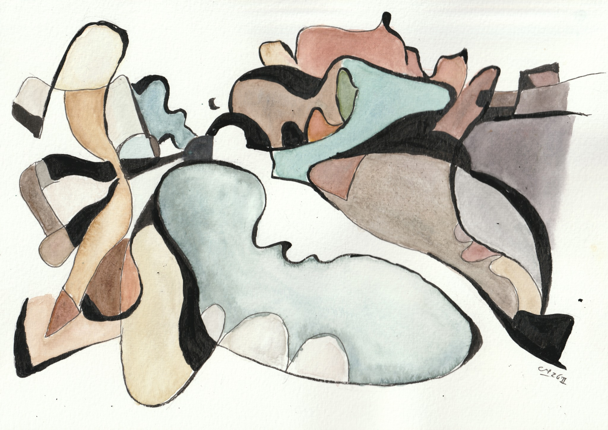

DAVID ERLICH · DESSINS, ENCRES ET AQUARELLES
Phanogrammes
Les traces d’une dimension plastique cachée.
Instagram · @phanogrammes
Manifeste
David Erlich exhume les Phanogrammes par le truchement d’un procédé dont il n’a pas la maîtrise complète.
Selon l’hypothèse généralement admise, ces derniers sont les traces d’une dimension cachée sous la réalité physique dont ils épousent partiellement les contours. Les habitants de cette dimension plastique jouissent d’une certaine liberté, mais sont souvent prisonniers de lignes d’encre.
Le procédé utilise des photographies prises par l’auteur, sélectionnées pour leur potentiel phanographique. Chaque tirage est unique : la temporalité du sujet ne coïncide pas nécessairement avec celle de sa révélation. Il ne faut donc pas s’inquiéter de trouver plusieurs versions de phanogrammes pour une même réalité.
Certaines études (minoritaires) indiquent que le phanotope (la dimension des phanogrammes) pourrait avoir été créé 380 000 ans après le Big Bang lorsque la lumière se découpla de la matière. Cette dimension subtile pourrait expliquer les divergences de mesure de la constante de Hubble.
Nous précisons que l’auteur n’a pas l’ambition de contribuer à la résolution de cette controverse.
Événements
Première exposition personnelle · Paris
20–22 novembre 2026 · Atelier SidebySide, 5 rue La Vieuville, Paris 18e
Quelques images de l’exposition des Phanogrammes, près de la place des Abbesses.
Phanogrammes
Pour chaque série, le phanogramme est présenté en premier, suivi de ses états préparatoires et, lorsqu’elle existe, de la photographie source.
Autres œuvres
Dessins, recherches et interprétations plastiques.